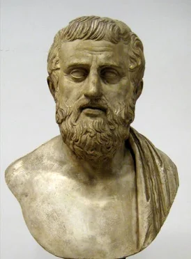

Sophocles (c. 496-406 BC)

Sophocles was an ancient Greek playwright who lived from around 497/496 to 406/405 BCE. He was one of the three great tragedians of Classical Greece, alongside Aeschylus and Euripides. He wrote more than 120 plays, but only seven have survived in their complete form, including Antigone, Oedipus Rex, Ajax, Electra, and Oedipus at Colonus. For almost fifty years, Sophocles was one of the most successful playwrights in Athens, taking part in dramatic competitions held during religious festivals such as the Great Dionysia and the Lenaia. He competed in thirty competitions, won twenty-four of them, and was never placed lower than second. He even defeated the older playwright Aeschylus in a competition in 468 BCE, establishing himself as an important figure in Greek theatre.
Sophocles helped change the way Greek tragedies were performed by introducing a third actor, traditionally credited to him, which allowed more characters to interact on stage and made the stories more complex. This also reduced the role of the chorus, which had previously been more central to the action. He placed greater emphasis on developing his characters, their personalities, and their difficult choices. His plays often explored themes such as justice, duty, fate, and the conflict between personal beliefs and the laws of society. His famous Theban plays, especially Oedipus Rex and Antigone, examine the consequences of human decisions and the struggle between individual responsibility and forces beyond human control. Through his storytelling and innovations in drama, Sophocles helped shape Greek tragedy and influenced the development of theatre for generations.
Famous Plays:
- Oedipus Rex - Οἰδίπους Τύραννος (Oidipous Tyrannos)
- Antigone - Ἀντιγόνη
- Oedipus at Colonus - Οἰδίπους ἐπὶ Κολωνῷ
- Ajax - Αἴας (Aias)
- Electra - Ἠλέκτρα
- The Women of Trachis - Τραχίνιαι (Trachiniae)